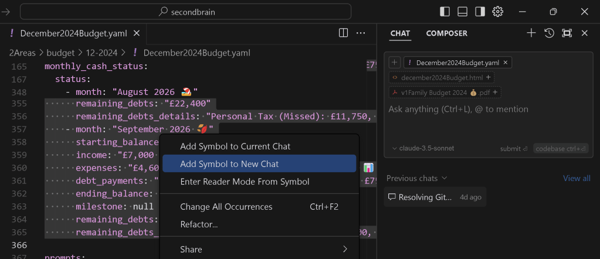

🚀 How to Align Your Learning Framework Using Cursor.ai IDE and Symbols in Chat

Cursor.ai IDE is a powerful tool for enhancing your coding and learning workflows. Pairing it with symbolic systems in chat can supercharge your organization and creativity, ensuring that your learning framework is dynamic, engaging, and productive.
📝 Why Cursor.ai IDE?
Cursor.ai is more than just an IDE—it's a collaborative space that integrates AI with code, making it an ideal hub for aligning your learning framework. When combined with symbols in chat, you can:
-
🌟 Visualize your process.
-
💡 Categorize ideas and prioritize tasks.
-
🚦 Track progress seamlessly.
-
🎯 Keep learning aligned with real-time coding insights.
🚀 Workflow: Learning Framework with Cursor.ai IDE
- Set Up Your Symbolic System 🧩
Define consistent symbols for organization across your projects:
✅ Completed: Tasks or modules you’ve finished.
-
🔄 In Progress: Current focus areas.
-
❓ Questions: Areas where you need clarification.
-
🛠️ Code Blocks: Key snippets you’ll revisit.
-
📌 Bookmarks: Mark pivotal points in your code or notes.
-
Integrate Symbols with Cursor.ai Features 🖱️
Autocomplete Comments: Use emojis in comments to denote statuses: # 🛠️ Refactor this function for scalability
-
Documentation Alignment: Add symbols in your inline notes for clarity.
-
Code Reviews: Highlight specific issues using symbols in discussions:
❗ Bug
-
🌱 Optimization Idea
-
Leverage AI in the IDE 🤖
Use Cursor.ai's AI capabilities to align learning with coding:
Ask for syntax recommendations using prompts.
-
Auto-generate code snippets, then tag them with 📎 for later reference.
-
Add screenshots directly to your comments to document progress 📸.
-
Real-Time Collaboration 🛠️
Pair coding sessions with live symbolic notations in the IDE. For example:
Start a coding discussion with ✍️ for brainstorming.
-
Use ⏸️ to mark areas for further review.
-
Save critical feedback using 📌 or ✅ after resolving.
💡 Benefits for Your Framework
Cursor.ai IDE + Symbols in Chat empowers you to:
-
🚀 Streamline learning and coding tasks.
-
🧠 Enhance retention with visual cues.
-
🌐 Collaborate more effectively with your team.
-
📊 Build reusable templates for future projects.
🌟 Pro Tips for Success
-
Use Kanban boards alongside Cursor.ai to track progress.
-
Regularly review your symbolic system for relevance and clarity.
-
Take advantage of Cursor.ai’s AI chat to refine workflows or solve coding challenges.
🔗 Connect with Me
I’d love to hear how you’re using Cursor.ai in your learning framework!
🎯 Ready to Code Smarter? Explore Cursor.ai, integrate symbols into your learning journey, and let’s chat about building even better workflows! 🚀
Imported from rifaterdemsahin.com · 2026